Практичні курси · журнал «ДентАрт» 2022 №3
Реставрація за розрахунком: верхні латеральні різці
Restoration by calculation: upper lateral incisors

Бери вершину – і матимеш середину.Григорій Сковорода
Ця стаття має свою передісторію. 2007 року у Британському стоматологічному журналі було опубліковано дослідження групи авторів з Тегеранського університету, які вивчали стандартизовані фотографії студентів з естетичною усмішкою для встановлення залежності ширини верхніх латеральних різців від принципу «золотої пропорції». Висновок проведеного дослідження був однозначним – немає даних, які б підтверджували, що «золота пропорція» повинна вважатися обов’язковою при створенні простору для відновлення відсутніх латеральних різців або тих, що мають аномальну форму.10
На цю публікацію листом до редактора відгукнувся Едді Левін, який у 1978 році першим опублікував застосування принципу «золотого перерізу» для планування фронтальної естетики зубних рядів.11,16 Він написав, що була опублікована низка праць, які підтверджують правильність його концепції (окремі негативні публікації були, але їх автори примітивно уявляли практичне застосування методу). І тисячі стоматологів у всьому світі користуються його методом візуального контролю над дотриманням пропорційності верхніх передніх зубів за допомогою шаблонів і циркуля.12
Інноваторові застосування принципу «золотої пропорції» в реставрації зубів відповів Андрій Астахов, який був знайомий з нашим методом розрахунку зубного ряду завдяки журналу «ДентАрт» (і, як ми сподіваємося, використав його в практиці). Він написав, що є і такий метод, коефіцієнти якого відрізняються від коефіцієнтів «золотої пропорції», і подав фрагмент з нашої статті,2 що описує послідовність розрахунку зубного ряду.9
Андрієві Астахову відповів сам Едді Левін! Він написав, що вважає формулу Радлінського важкою для розуміння і не знайшов жодних публікацій автора (їх не було англійською, усі публікації були українською і російською мовами). І взагалі строга симетрія і пропорційність зустрічаються в природі дуже рідко, тому відхилення в них сприймаються природними або як певний шарм.10
За допомогою Андрія Астахова ми підготували і опублікували Едді Левіну відповідь, яка описувала коефіцієнти пропорційності для фронтальних ділянок як верхньої, так і нижньої зубних дуг.4 А завершили публікацію словами, що розрахунок зубного ряду дає уявлення про ідеальний результат, але оскільки реставрації виконуються прямим способом, то завжди будуть деякі відхилення від розрахункового уявлення, які нададуть зубам, що реставруються, необхідних природності і шарму.11
Ірфан Ахмад помітив публікацію Андрія Астахова і включив автора методу розрахунку зубного ряду в список критикованих за математико/геометричний підхід до планування естетики: Вільямс (1914), Ломбарді (1973), Престон (1993), Гіллен (1994), Сноу (1999) і Ворд (2001), а наші коефіцієнти пропорційності назвав «золотими коефіцієнтами» за аналогією із «золотою пропорцією».8
Сам Ірфан Ахмад – автор теорії естетики, що ґрунтується на сприйнятті, згідно з якою естетика має бути спланована так, щоб зміни в дизайні зубів були сприйняті пацієнтом за участю стоматологічної команди. Тому він і критикує теорії естетики, які ґрунтуються на математиці і на морфофункціональному підході.
Математичний підхід, що ґрунтується на принципі «золотого перерізу», не виключає застосування у фронтальній естетиці підходів теорії сприйняття, а навпаки, встановлює прораховувані параметри, які готують пацієнта до позитивного сприйняття зміни дизайну лиця зі зміною форми і розмірів передніх зубів. Естетика – це потім, наприкінці, буде враженням, а спочатку в основі естетики лежить чиста математика! Що ми і спробуємо продемонструвати клінічним прикладом реконструкції верхніх латеральних різців аномальної форми…
Реконструкція верхніх латеральних різців аномальної форми
Гармонія фронтальної ділянки верхнього зубного ряду відсутня, її елементи розбалансовані: треми і діастема замість правильних контактних поверхонь з контактами, що повторюють лінію ріжучих країв… Немає симетричності і пропорційності коронок верхніх передніх зубів, але особливий дисонанс у фронтальну естетику вносить аномальна форма латеральних різців, утворюючи значні горизонтальні амбразури на контактах з іклами і центральними різцями.
Діагностичні рентгенівські знімки засвідчили, що у латеральних різців аномальної форми дентин має менші розміри при звичайній товщині шару емалі. У центральних різців тонка емаль по медіальних контактних поверхнях.
За відображенням в оклюзійному дзеркалі, встановленому на премоляри, можна припустити стирання ікол і ріжучих країв центральних різців з втратою висоти коронок (припущення має бути підтверджене наявністю розкритого дентину по рвучих горбиках і ріжучих краях, що повинно бути видно на знімках по осі зубів).3,4
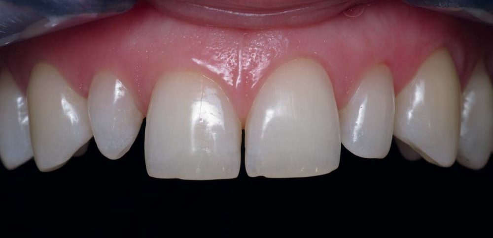
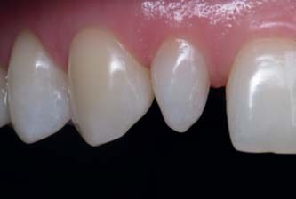
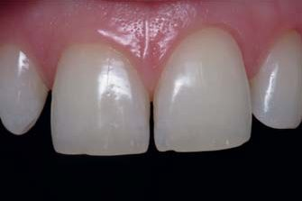
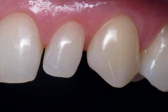
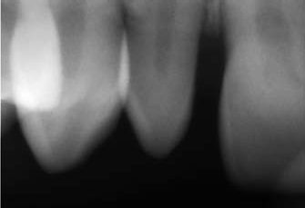
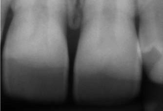
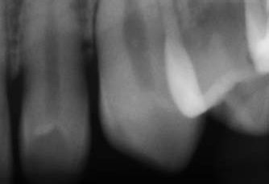
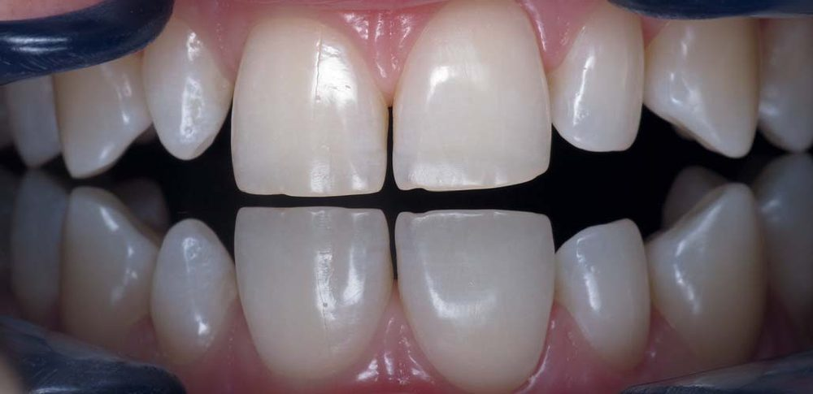
Раніше від усіх діагностичних процедур, які вимагають певного часу і можуть призвести до пересихання зубів, було визначено колір коронок зубів: візуально за шкалою еталонів кольору і за допомогою спектрофотометра. Коронки ікол відповідають еталону А3, центральні різці і лівий латеральний різець – еталону В2, спектрофотометром для кожної коронки визначені світлота L, насиченість С, колірний тон H. Як свідчить досвід, колір таких еталонів можна відтворити, якщо для імітації предентину використати яскравий білий відтінок високої опаковості, для імітації основного дентину – А3,5 опаковий мікрогібридного композиту, для імітації основної емалі – відтінок В2 нанокомпозиту і для імітації поверхневої емалі – жовтий прозорий відтінок нанокомпозиту. Усі 4 відтінки слід скласти в топографії відповідних тканин зуба, що реставрується, і тоді колір реставрованого зуба буде отримано автоматично (біоміметичний спосіб досягнення кольору реставрованих зубів).
Розрахунок фронтальної ділянки зубного ряду
Визначити оптимальну ширину латеральних і центральних різців для даної довжини зубної дуги можна в такій послідовності:2
- вимірювання штангенциркулем довжини верхньої зубної дуги від ікла до ікла (чотири виміри по будь-яких фіксованих точках на рівні контактних пунктів);
- вибір «золотого» коефіцієнта пропорційності між латеральним і центральним різцями (стандартний «золотий» коефіцієнт – 1,3);
- визначення ширини латеральних різців шляхом ділення довжини фронтальної ділянки зубної дуги на суму «золотих» коефіцієнтів різців;
- визначення ширини центральних різців шляхом множення ширини латеральних різців на «золотий» коефіцієнт пропорційності;
- перевірка отриманої ширини латеральних і центральних різців у зубному ряду за допомогою штангенциркуля (приблизне визначення локалізації контактів між різцями).
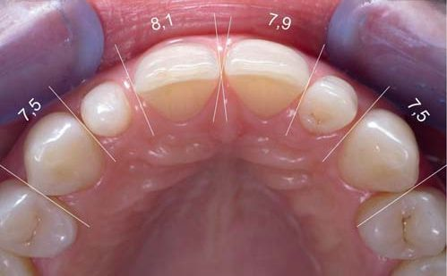
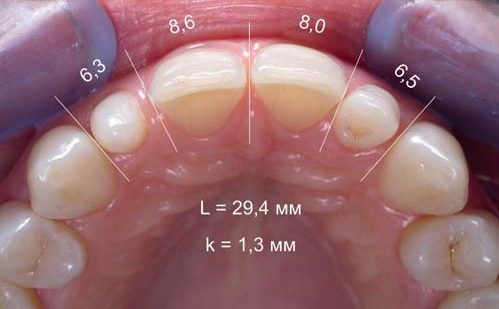
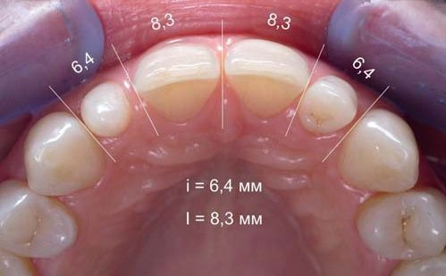
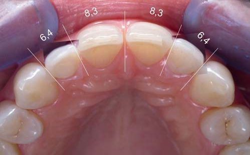
Оцінка ширини передніх зубів
Спочатку слід оцінити, як розміри верхніх передніх зубів співвідносяться зі стандартними розмірами коронок зубів у 3-х напрямках: висота, ширина і товщина.3 Для цієї початкової клінічної ситуації головними є дані ширини коронок зубів (висота коронок різців тут вторинна, вона легко встановлюється за ступенем стирання ріжучих країв). Товщина коронок, їх вестибуло-оральний розмір візуально не змінені.
Виміряна штангенциркулем ширина правого і лівого іклів становила однакову величину 7,5 мм (повністю відповідає стандартній ширині верхніх іклів).
Ширина латеральних різців аномальної форми підлягає визначенню шляхом розрахунку верхньої фронтальної ділянки зубного ряду…
Ширина правого і лівого центральних різців дорівнює 8,1 мм і 7,9 мм відповідно (це значно менше, ніж стандартна ширина центральних різців 8,5 мм). Борозна на ріжучому краю обох центральних різців з відкритим дентином свідчить і про втрату висоти коронок внаслідок стирання.
Таким чином, при стандартній ширині іклів і аномальній формі латеральних різців коронки центральних різців менші від стандартної на 0,4 мм (правий) і 0,6 мм (лівий), і для відновлення пропорційності і симетричності фронтальної ділянки верхнього зубного ряду до плану реставрації верхніх передніх зубів слід внести і відновлення центральних різців.
Визначення довжини зубної дуги
Наступним кроком розрахунку фронтальної ділянки верхнього зубного ряду було визначення довжини фронтальної ділянки від ікла до ікла. Для цього штангенциркулем проведено 4 виміри (за кількістю різців): від медіального контакту правого ікла до латерального контакту правого центрального різця – 6,3 мм, далі від латерального контакту правого центрального різця до медіального контакту лівого центрального різця – 8,6 мм, від медіального до дистального контактів лівого центрального різця – 8,0 мм і від латерального контакту лівого центрального різця до медіального контакту лівого ікла – 6,5 мм. Іноді ми змінюємо точки відліку на центральних і латеральних різцях для самоконтролю, щоб уникнути помилки в установці штангенциркуля. Сума 4-х вимірів має бути однаковою у кожному визначенні з різними точками відліку. Підсумувавши дані 4-х вимірів, ми одержали довжину фронтальної ділянки верхнього зубного ряду – L = 29,4 мм, і це менше, ніж стандартна довжина 30 мм, на 0,6 мм. Отже, ця різниця із стандартом має бути розподілена пропорційно на всі чотири різці відповідно до простору, займаного в зубній дузі.
Вибір коефіцієнта пропорційності
Стандартний «золотий» коефіцієнт співвідношення ширини центральних і латеральних різців становить 1,3, але ми можемо визначити його індивідуальне значення шляхом ділення наявної ширини центрального різця на наявну ширину латерального різця. Можна змінити «золотий» коефіцієнт у прийнятних межах, якщо побудова контактів майбутніх різців оптимальної ширини вимагає значних ушкоджень природних зубних тканин (біологічна доцільність втручання повинна залишатися на першому місці).
Визначення ширини латеральних різців
Пропорційна ширина латеральних різців визначається за формулою
i = L / k
де i – ширина латерального різця, L – довжина фронтальної ділянки зубної дуги від ікла до ікла, k – сума «золотих» коефіцієнтів 4-х різців.2
Довжина фронтальної ділянки зубної дуги відома, сума коефіцієнтів дорівнює 4,6 (1+1,3+1,3+1). Поділивши довжину фронтальної ділянки на суму коефіцієнтів 4-х різців, ми отримали значення пропорційної ширини латеральних різців для цього зубного ряду – 6,4 мм (відповідає коефіцієнтові 1,3).
Зверніть увагу, що розрахункова оптимальна ширина коронок латеральних різців практично повністю співпадає з розмірами простору в зубному ряду, призначеного для латеральних різців. Відхилення в 0,1 мм може бути наслідком різної установки штангенциркуля і легко компенсується при відновленні контактних поверхонь. Отже, для відновлення гармонії фронтальної ділянки верхньої зубної дуги досить побудувати коронки латеральних різців в наявному просторі між іклами і центральними різцями… І це клінічне рішення було прийняте на основі розрахунку!
Визначення ширини центральних різців
Визначити оптимальну ширину коронок центральних різців можна, помноживши дані пропорційної ширини латеральних різців на обраний «золотий» коефіцієнт – I = i · k. Визначена пропорційна ширина латеральних різців дорівнює 6,4 мм, «золотий» коефіцієнт – 1,3, похідне становитиме 6,4 мм · 1,3 = 8,3 мм. Тобто, пропорційна ширина центральних різців для цієї зубної дуги дорівнює 8,3 мм.
Перевірка розрахункової ширини різців
Отримані значення ширини латеральних і центральних різців виставили на штангенциркулі і перевірили в зубному ряду на їх реальну застосовність (перевірка в порожнині рота дозволяє уникнути арифметичної помилки, властивої людям епохи калькуляторів).
Реставрація верхніх іклів
Відновлення форми правого ікла
Форма іклів дивовижна, оскільки медіальна частина коронки – це продовження вестибулярної і піднебінної поверхонь різців, а латеральна частина коронки вже належить до бічних зубів, і дистальна піднебінна ямка повторює позицію дистального скату вестибулярного горбика першого премоляра. Ось чому так важливо ретельно вибудувати і перевірити форму іклів. Проведені ізоляція рабердамом, препарування зубних тканин і адгезивна підготовка поверхні.
Форма відбудованого правого ікла
Через відновлення анатомічної форми правого ікла усунуті дефекти зубних тканин, що утворилися в результаті стирання. Тепер вершина горбика розміщена медіальніше приблизно на міліметр від умовної середини коронки по вертикалі, латеральний скат горбика довший і більш викруглений, а медіальний скат коротший і пряміший. Обидва скати горбика є продовженням зовнішньої поверхні емалі, диктуючи позицію вершини горбика і висоти коронки ікла.
Відновлення форми лівого ікла
Механічне препарування поверхні зубних тканин іклів проведене фінішним бором у ділянках стирання на рвучих горбиках. Хімічне препарування виконане в техніці тотального протравлювання ортофосфорною кислотою, поверхні підготовлені дентинним адгезивом з гідрофобним покриттям текучим композитом. Для реставрації передніх зубів слід ізолювати рабердамом зуби «від п’ятого до п’ятого», щоб з оклюзійним дзеркалом орієнтуватися в зубному ряду.
Форма відбудованого лівого ікла
Форму обох іклів відновлено відтінками дентину мікрогібридного композиту та відтінками основної емалі і прозорої емалі наногібридного композиту. Тепер позиція горбиків, позиція зеніту шийки, висота контактних пунктів і форма контактних поверхонь відповідають комплексу ознак кута коронки. Оцінка форми на цьому етапі дуже важлива, тому що верхні ікла – основа верхнього зубного ряду і за ними як просторовими орієнтирами реставруватимуться всі різці.
Перевірка довжини відновлених іклів
Довжину відновлених ікол перевірено в оклюзійному дзеркалі за премолярами – в ідеалі премоляри й ікла мають бути в одній площині. Перевірка в оклюзійному дзеркалі допоміжна, а провідним методом досягнення початкової висоти коронок іклів залишається пошарове відновлення втрачених зубних тканин. Після відновлення іклів ми робимо перерву, щоб перед реконструкцією латеральних різців оцінити виконання попереднього етапу «свіжим поглядом».
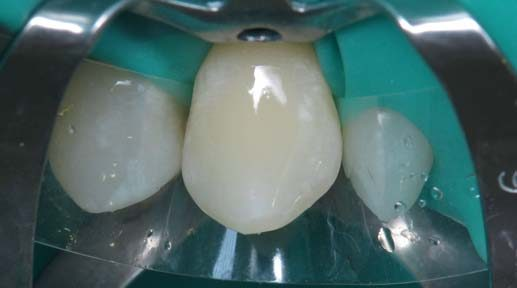
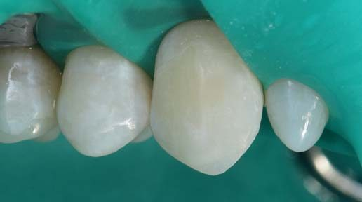
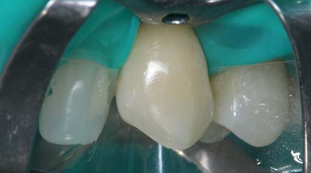
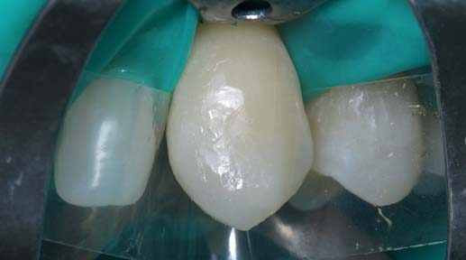
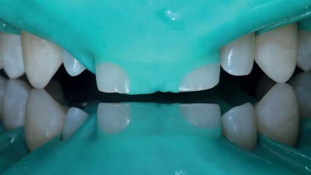
Реконструкція правого латерального різця
Препарування і адгезивна підготовка
Створення форми латеральних різців є реконструкцією, оскільки втраченої форми в цьому клінічному випадку не було, і отримана в результаті реконструкції форма коронок буде нашим креативом. Ми вважаємо, що немає жодної необхідності візуалізувати форму майбутньої коронки за допомогою воскового або композитного моделювання, оскільки усі межі кожної коронки відомі в трьох напрямках: по піднебінній, вестибулярній і контактних поверхнях.
Побудова світлого центру
Після поверхневого препарування і адгезивної підготовки по медіальній поверхні було відновлено яскравим відтінком підвищеної опаковості контури предентину, що оточують уявну порожнину зуба (строго вертикально, залишаючи простір приблизно 2 мм до латеральної контактної поверхні правого центрального різця). Послідовність реставрації переднього зуба: світлий центр, оральна і вестибулярна поверхні, латеральна і медіальна контактні поверхні.
Основний дентин орально
Щоб отримати форму і колір реставрованого зуба, треба уявити собі пошарову внутрішню структуру майбутньої коронки і збудувати відсутні зубні тканини відтінками композиту з відповідними оптичними властивостями. Для побудови коронки відомі латеральна поверхня (до контакту з іклом), вестибулярна і оральна поверхні. Оральну поверхню основного дентину належить побудувати зі створенням ілюзії звичайної ширини коронки в ділянці шийки зуба.
Основна емаль орально
По оральній поверхні відтінком тіла наногібридного композиту відновлено основну емаль з мамелонами. Якщо дентин на всіх поверхнях відновлено строго вертикально від шийки зуба (у цьому випадку шийки, розширеної медіально за допомогою жорсткої металевої матриці), то шаром емалі треба сформувати випуклий піднебінний горбик, увігнуту піднебінну ямку і випуклі контактні поверхні зі встановленням висоти майбутніх контактних пунктів.
Поверхнева емаль орально
Прозорим відтінком наногібридного композиту з орієнтацією на піднебінні поверхні ікла і центрального різця, що стоять поруч, відновлено оральну поверхневу емаль з вертикальними крайовими валиками. Довжину коронки встановлено на рівні стертого краю центрального різця. Завдяки оптичним властивостям композиту вже на цьому етапі можна спостерігати оптичні ефекти опалесценції і гало, характерні для природної емалі інтактного різця.
Висхідні колони предентину
Імітацію предентину порожнини зуба доповнено імітацією висхідних колон предентину, що прямують від рогів пульпи в напрямку ріжучого краю (звісно, в межах дентину) і є анатомічно самою внутрішньою частиною мамелонів, видиму частину яких ми спостерігаємо в ріжучому краї зовні. Для цієї імітації використано той самий яскравий відтінок підвищеної опаковості наногібридного композиту. Висхідні колони предентину нададуть реставрації більшої яскравості…
Основний дентин вестибулярно
Вестибулярний дентин виконано тим самим опаковим відтінком мікрогібридного композиту строго вертикально від доповненої шийки зуба. Дентинну частину трьох мамелонів як структурних утворень природного зуба зазвичай ми завершуємо приблизно за 2 мм до ріжучого краю. Плануючи об’єм основного дентину, треба максимально точно дотримуватися топографії емалево-дентинного з’єднання як основного орієнтира в топографії реставрованого зуба.
Основна емаль вестибулярно
Відтінком тіла наногібридного композиту відновлено основну емаль у формі з розширенням вестибулярно і по контактних поверхнях, ідучи від шийки зуба. У нижній третині основної емалі виконані три мамелони з наближенням до ріжучого краю ще на 1 мм з ретельним заповненням проміжків між мамелонами шару дентину, щоб уникнути потрапляння повітря між шарами композиту і формування повітряних бульбашок всередині реставрації.
Поверхнева емаль вестибулярно
Прозорим відтінком наногібридного композиту завершено формування в основному коронки правого латерального різця з невеликим запасом композиту на оральній, вестибулярній поверхнях і по ріжучому краю для фінішної обробки поверхні реставрації. Побудувавши коронку правого латерального різця в основному, отримуємо контроль над позицією зуба в зубному ряду, і залишається лише уточнити форму коронки асиметричними контактними поверхнями.
Контактні поверхні
З прозорого відтінку мікрогібридного композиту і за допомогою лавсанових матриць, попередньо контурованих відповідно до випуклості латеральної і медіальної поверхонь, з розклинюванням зубів виконано контактні поверхні з позиціонуванням контактних пунктів по висоті. Прозорий відтінок мікрогібридного композиту має кремоподібну консистенцію і тому легко й рівномірно розподіляється у вузькому просторі, відведеному під контактну поверхню.
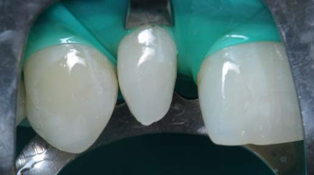
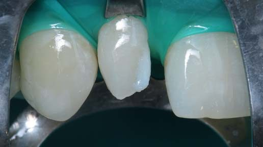
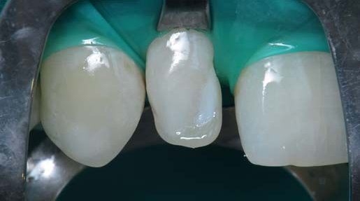
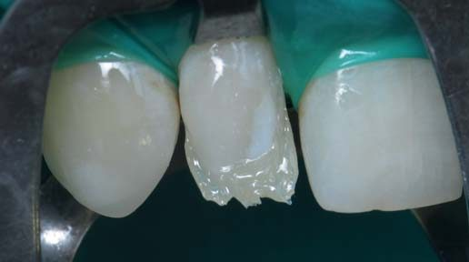
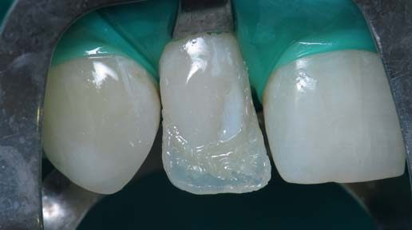
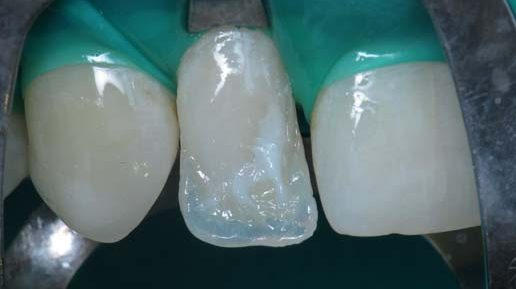
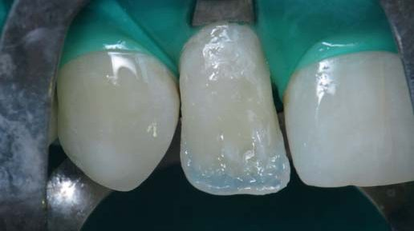
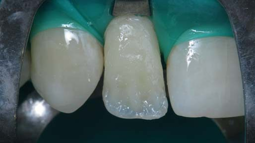
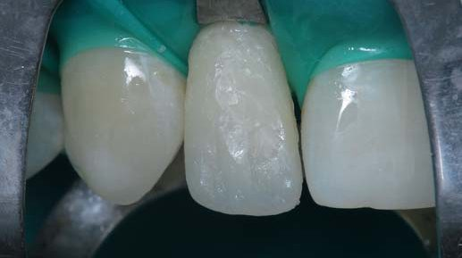
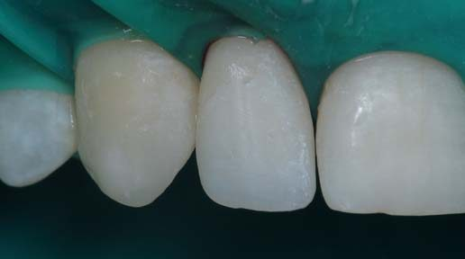
Реконструкція лівого латерального різця
Адгезивна підготовка емалі
Фінішними борами і абразивними смужками проведено символічне препарування емалевої поверхні лівого латерального різця. Механічна обробка поверхні емалі і зняття безпризмового шару має забезпечити довговічне з’єднання емалі з адгезивною системою. Підготовка «ноу преп», маючи на увазі препарування механічне, за нашим досвідом, призводить до дебондингу вже за кілька років. Адгезивна підготовка виконана в техніці тотального протравлювання.
Основний дентин по центру коронки
Латеральна контактна поверхня по центру коронки доповнена вузькою смужкою штучного дентину з мікрогібридного композиту, який легко вклеюється, добре розсіює світло та має оптимальну еластичність. Під контролем штангенциркулем залишено простір під штучну емаль в межах 1 мм між поверхнею дентину і медіальною поверхнею ікла. Простір під штучну емаль по медіальній поверхні відповідає проєкту, тому не потребує звуження шаром штучного дентину.
Основна емаль орально
Відтінком тіла наногібридного композиту відновлено оральний шар основної емалі. Побудова трьох мамелонів у шарі основної емалі – предмет фантазії та навичок виконавця і здається привабливою, створюючи враження творчого підходу до самого процесу реставрації. Проте ця техніка несе небезпеку залишення великої кількості місць для захоплення бульбашок повітря при внесенні прозорого відтінку, тому важливо зберігати в цьому межі доцільності.
Поверхнева емаль орально
Прозорим відтінком наногібридного композиту відновлено оральний шар поверхневої емалі з формуванням профілю коронки лівого латерального різця у фронтальній площині і позиціонуванням ріжучого краю у просторі. Цей важливий етап слід зафіксувати контрольним цифровим фото в мінімальному протоколі фотофіксації процесу реставрації кожного зуба: до реставрації, після препарування, побудова наполовину (цей етап) і після полірування.
Основна і поверхнева емаль вестибулярно
Вестибулярні шари основної і поверхневої емалі відновлені тими ж відтінками наногібридного композиту, що визначені під час ідентифікації кольору зубів, які мають бути реставровані. Залишилося доповнити побудовану в основному конструкцію коронки лівого латерального різця прозорими контактними поверхнями і порівняти на екрані комп’ютера за цифровими фотографіями форму обох латеральних різців на дзеркальну ідентичність.
Контактні поверхні
Прозорим відтінком мікрогібридного композиту за допомогою контурованих лавсанових матриць відбудовано латеральну і медіальну поверхні коронки латерального різця. Латеральна поверхня повинна бути більш випуклою, контактний пункт має бути позиціоновано вище, а кутик сформовано більш круглим. Медіальна поверхня повинна бути більш прямою, контактний пункт має бути позиціоновано нижче, а кутик сформовано менш круглим.
Перевірка довжини латеральних різців
Перевірка реставрованих зубів в оклюзійному дзеркалі, встановленому на верхні премоляри й ікла, має показати, що ріжучі краї латеральних різців перебувають на однаковій відстані від площини дзеркала і що дотримано симетричності ширини цих зубів. Корекція ріжучих країв латеральних різців борами і абразивними дисками провадиться доти, доки не буде отримано потрібний результат, включаючи форму кутиків ріжучих країв.
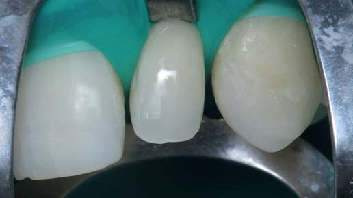
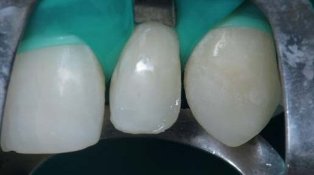
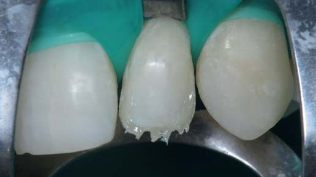
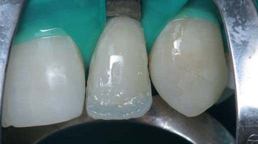
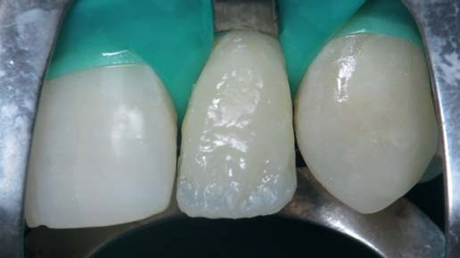
Реконструкція центральних різців
Адгезивна підготовка
Після перерви, що була після найскладнішого етапу реконструкції латеральних різців, проведено препарування емалі контактних поверхонь і ріжучих країв фінішними борами, накладено нову завісу рабердаму з ізоляцією зубів «від п’ятого до п’ятого» і зроблено адгезивну підготовку однокомпонентним дентинним адгезивом. Треба не тільки відновити ріжучі краї, але й перебудувати центральні різці з досягненням симетрії і пропорційності.
Основна емаль
На ріжучих краях центральних різців спочатку була закрита борозна між оральною і вестибулярною емаллю дентинним відтінком мікрогібридного композиту для кращої довготривалої ретенції композиту і формування плавного переходу кольору між анізотропною коронкою та ізотропною реставрацією. Далі відтінком тіла добудовані контактні поверхні в основі: латеральна в правому центральному різці і медіальна в лівому центральному різці.
Перевірка довжини центральних різців
Відбудовані в основі контактні поверхні центральних різців були завершені прозорим відтінком мікрогібридного композиту, рухаючись від країв до центру під контролем ширини коронок за допомогою штангенциркуля. Наостанок були завершені обидві медіальні контактні поверхні, і зображення реставрованих центральних різців в оклюзійному дзеркалі підтвердило симетричність коронок, кутиків ріжучих країв і вертикальність середньої лінії.
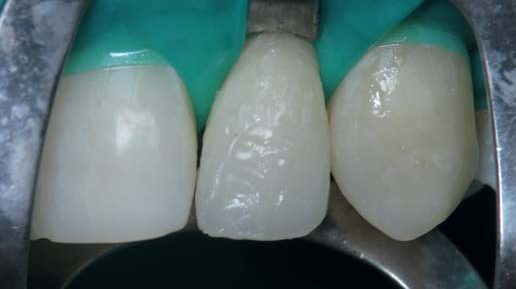
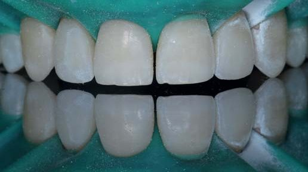
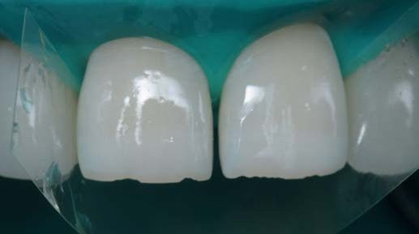
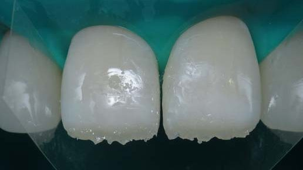
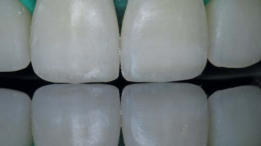
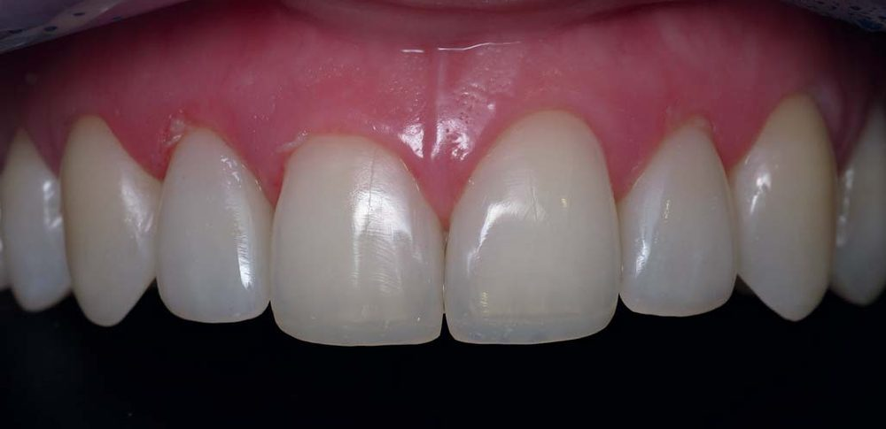
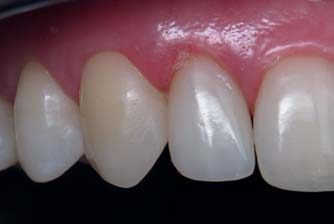
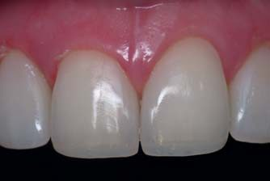
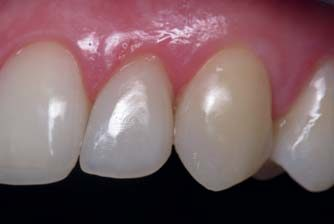
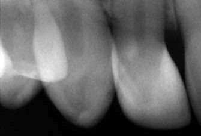
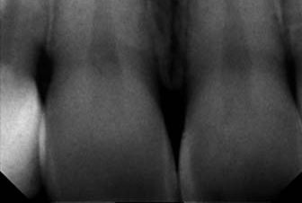
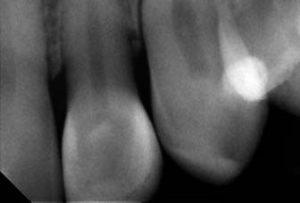
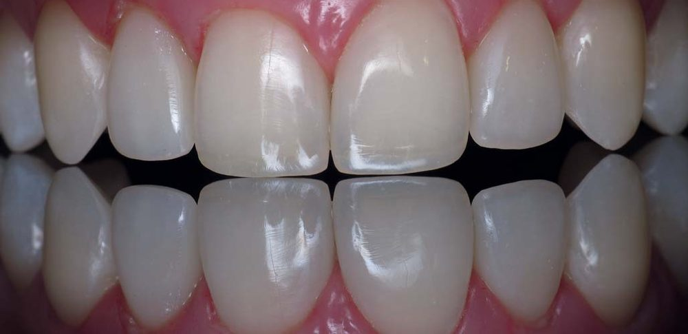
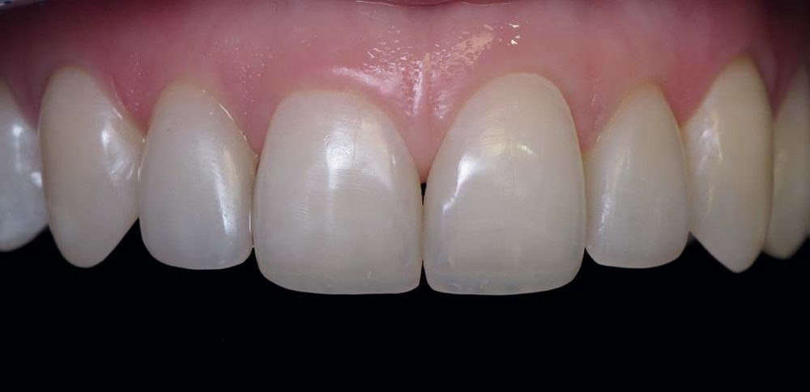
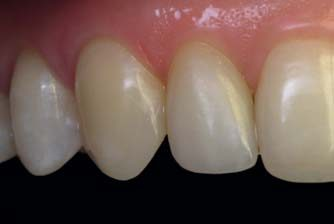
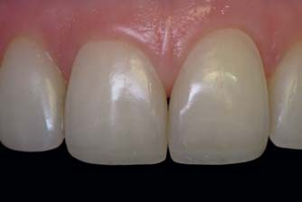
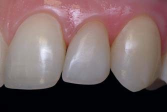
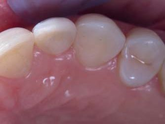
Реставровані зуби у динаміці
Вибрані моніторингові фотографії зафіксували стан реставрованих зубів до втручання, безпосередньо після завершення втручання, через один місяць, через 3 і 9 років…
За цими світлинами можна оцінити симетричність і пропорційність фронтальної ділянки верхнього зубного ряду, отримані за розрахунком з використанням «золотих коефіцієнтів». Усі елементи, що становлять фронтальну естетику, наявні: ікла, латеральні і центральні різці симетричні, центральні і латеральні різці мають вигляд пропорційних та збалансованих один щодо одного, контактні пункти і ріжучі краї утворюють на різній висоті дві криві, що повторюються, кутиками ріжучих країв утворені симетричні амбразури... Усі ці елементи зберегли свою актуальність протягом усього періоду динамічного контролю!
Висока шийка лівого центрального різця або, можливо, низька шийка правого центрального різця вносять у цю просторову гармонію деяку «фальшиву ноту»… Якщо ця різниця у висоті шийок виявиться неприйнятною, то виправити ситуацію можна було б висіканням ясенного краю правого центрального різця, але цього не сталося.
Зображення верхніх передніх зубів в оклюзійному дзеркалі, встановленому на верхні премоляри, підтверджує, що висота коронок центральних різців досягнута правильно, тому що премоляри, ікла і центральні різці перебувають в одній площині, а ріжучі краї латеральних різців – приблизно за 1 мм до неї.
На час цієї публікації виповнилося 10 років від часу реставрації/реконструкції фронтальної ділянки верхнього зубного ряду з латеральними різцями аномальної форми, і це становить мінімальний термін служби прямих реставрацій. Реставровані зуби слід обстежити на наявність дебондингу, акцентуючи увагу на функціонально активних іклах та центральних різцях.6 Виявлені ділянки дебондингу можуть бути інфільтровані дентинним адгезивом (ресилінг) або замінені з оновленим адгезивним з’єднанням (реновація), що дозволить уникнути повної заміни реставрацій упродовж такого довгого періоду, наскільки це буде можливо… Чекаємо на Перемогу, щоб призначити зустріч для обстеження реставрованих зубів по завершенню терміну служби реставрацій!
Висновки
При відновленні верхніх латеральних різців аномальної форми для відтворення гармонії зубного ряду необхідно враховувати принцип «золотої пропорції». Оскільки цей принцип виконується тільки на фронтальному зображенні обличчя, усмішки, зубних рядів і зубів, а в прямій реставрації потрібно будувати розташовані по дузі реальні коронки зубів, то визначити оптимальну ширину всіх верхніх передніх зубів для пропорційного і симетричного відновлення латеральних різців при їх аномальній формі або первинній адентії можна за допомогою розрахунку фронтальної ділянки зубного ряду з використанням наших «золотих коефіцієнтів».2
Розрахунок зубного ряду дозволяє передбачувано визначити пропорційність та симетричність зубів і зубних рядів, виявити порушення і можливі їх причини, а також відновити всі ці елементи з контролем штангенциркулем на всіх етапах реставрації.
Рахуйте, прораховуйте, розраховуйте зуби і зубні ряди, ця процедура не завдає жодної шкоди пацієнтам і потребує мінімуму часу. І лише після багаторазового повторення розрахунку зубного ряду у багатьох пацієнтів ви зможете переконатися в тому, наскільки дивовижна природа і створені нею зуби, і що естетика – це передусім математика!
Література
- Радлінський С. В., Новіков В. С., Смажило С. М. Ортопедичні аспекти реставрації зубів композитами // М-ли Респ. наук. конф. «Актуальні питання стоматології дитячого віку і ортодонтії». – Полтава. – 1993. – С. 118–119.
- Радлинский С. Реконструкция зубного ряда // ДентАрт. – 1997. – № 3. – С. 51–64.
- Радлинский С. Системное восстановление всех зубов при повышенной стираемости // ДентАрт. – 2007. – № 3. – С. 38–48.
- Радлинский С. Реставрация по расчету: верхние латеральные резцы аномальной формы // ДентАрт. – 2013. – № 2. – С. 29–40.
- Радлинский С. Реставрация контактных поверхностей в нижних передних зубах // ДентАрт. – 2016. – № 2. – С. 18–32.
- Радлинский С. Системная реновация реставрированных зубов: верхние зубы // ДентАрт. – 2019. – № 2. – С. 15–28.
- Радлинский С. Устранение скученности зубов: пропорциональное контролируемое сужение верхних резцов // ДентАрт. – 2021. – № 3. – С. 35–47.
- Ahmad I. Prosthodontics at Glance. – Oxford: Wiley-Blackwell, 2012. – P. 57.
- Astakhov A. Harmonious proportion // British Dental Journal. – 2008. – 205. – P. 61.
- Bukhary S. M. N., Gill D. S., Tredwin C. J., Moles D. R. The influence of varying maxillary lateral incisor dimensions on perceived smile aesthetics // British Dental Journal. – 2007. – 203. – P. 687–693.
- Levin E. I. Dental esthetics and the golden proportion // J Prosthet Dent. – 1978. – 40. – P. 244–252.
- Levin E. I. Aesthetic proportions // British Dental Journal. – 2008. – 204. – P. 419–420.
- Levin E. Golden additions // British Dental Journal. – 2008. – 205. – P. 637.
- Radlinskiy S. Aesthetic deviation // British Dental Journal. – 2009. – 206. – P. 447.
- Radlinsky S. Crowded Teeth Elimination: Proportional & Controlled Narrowing of Upper Incisors // J Dent Sci Res Rep. – 2022. – V. 4 (3). – P. 1–11.
- Rufenacht C. R. Fundamental of Esthetics. – Chicago: Quintessence Publ. Co. – 1992. – P. 87–92.